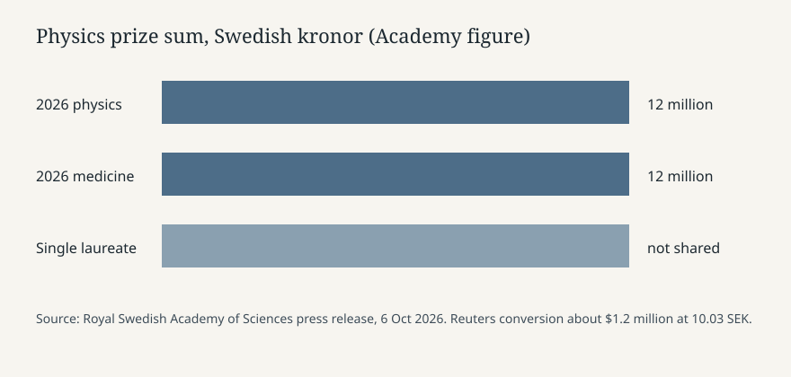

Stockholm · Physics · 6 October 2026
Francis Halzen won the physics Nobel for IceCube and high-energy neutrinos

What the desks agree
On Tuesday 6 October 2026 the Royal Swedish Academy of Sciences awarded the Nobel Prize in Physics to Francis Halzen of the University of Wisconsin–Madison. The citation, published on nobelprize.org the same morning, is “for decisive contributions to the IceCube Neutrino Observatory and the discovery of high-energy neutrinos of astrophysical origin.” Reuters, the BBC and the Academy press release name the same person, the same campus and the same instrument. The prize amount is 12 million Swedish kronor. Because there is one laureate, the sum is not split. Reuters converted that figure at about 10.03 kronor to the dollar, roughly 1.2 million dollars.
Halzen was born in 1944 in Tienen, Belgium. The Academy lists a 1969 doctorate from KU Leuven and a professorship at Wisconsin. He is a U.S. citizen. IceCube is a cubic kilometre of Antarctic ice fitted with light sensors at the South Pole. The press release says he first presented the South Pole idea in 1988, that the array was finished in 2011, and that researchers later published a detection of neutrinos that must come from outside the solar system.
The mechanism is the part a reader needs. Neutrinos pass through the Earth almost without interacting. On the rare collision with an atomic nucleus, charged particles produce a flash of light, Cherenkov radiation, that sensors in clear ice can time. Direction and energy of that flash are the astronomical signal. Ordinary telescopes see light that can be absorbed or bent. A high-energy neutrino keeps its direction. That is why the Academy calls the array a new kind of astronomy, in Mark Pearce’s words as chair of the physics committee: tenacity and vision “paved the way for a new kind of astronomy.”
What is only a quote
Halzen’s telephone remarks are quotes, not measurements. Al Jazeera, citing the news conference, reports that he spoke from Italy, called the award a surprise, and said he felt “strange” even though the prize had been predicted. The BBC quotes him: “I have to emphasise how lucky I was,” and that very few, including himself, thought the project would work. Those sentences describe his state of mind. They do not add a new detection count.
Reuters’s longer background — Einstein, the Curies, last year’s quantum prize to Clarke, Devoret and Martinis — is context, not a claim about IceCube’s data. The “ghost particle” label in headlines is a metaphor for weak interaction. It is not a second species of particle.
How the instrument fits the calendar
This is the second science prize of the week. On Monday the medicine prize went to Karl Deisseroth, Peter Hegemann and Georg Nagel for optogenetics, also 12 million kronor, shared. Chemistry is scheduled for Wednesday. Medals are presented in Stockholm on 10 December, the anniversary of Alfred Nobel’s death. None of that schedule changes the physics citation.
IceCube is an international collaboration hosted at the South Pole. The surface buildings in the Commons still are the station as photographed in January 2023 by Christopher Michel. They are not the buried sensors, and they are not Tuesday’s Stockholm room. A reader who wants the sensor count, the energy threshold of the astrophysical sample, or the named source candidates should use the Academy’s scientific background PDF. Those details are not restated as new facts here because Tuesday’s wires do not re-audit the 2013 papers.
What this story is not
It is not a claim that neutrinos have been traced to one named galaxy in today’s announcement. The press release says the search for sources “could begin in earnest” after the extragalactic detections, and that later data “could even reveal previously unknown cosmic phenomena.” Possibility is not a catalogue. It is not a Belgian-versus-American ownership dispute: the Academy lists birthplace, doctorate and employer together. It is not a budget story about the U.S. National Science Foundation, which has funded IceCube operations for years; Tuesday’s texts do not publish a new appropriation. It is not a comparison of Halzen’s politics. No wire in this set does that.
The checkable core is small and stable: one name, one citation, one instrument finished in 2011, one prize sum, one Academy, dated 6 October 2026. Everything else in the coverage is either mechanism, history, or a telephone reaction.

Source articles and scores
| Outlet | Headline | T | N | C |
|---|---|---|---|---|
| Royal Swedish Academy / Nobel Prize | Press release: Nobel Prize in Physics 2026 | 98 | 0 | 100 |
| Reuters | Francis Halzen wins 2026 Nobel Prize in Physics | 95 | 0 | 98 |
| BBC | ‘Ghost particles’ from space telescope wins physics Nobel | 93 | 0 | 96 |
| Al Jazeera | Francis Halzen wins Nobel Prize in Physics for work on ‘ghost particles’ | 90 | -2 | 92 |
Scores are for each article. The Academy page is the decision text. Reuters matches it and labels the dollar figure as a conversion. The BBC’s “space telescope” is a loose instrument class but the body names IceCube. Al Jazeera’s quote treatment matches the phone call.